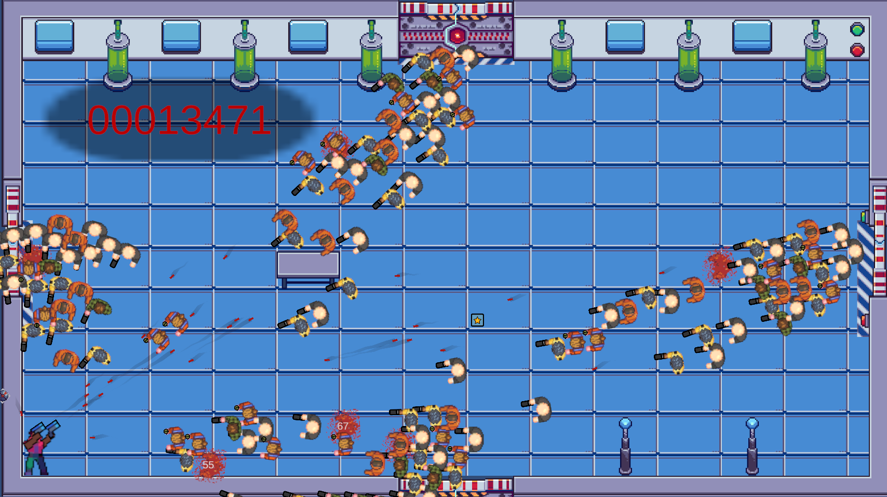

Introducing Cube Survivor: A Smash TV-Inspired Indie Mayhem
Posted on August 7, 2025
Hey, arena warriors! This is Victor from Unexpected Software, kicking off with the first dev log for Cube Survivor—my love letter to Smash TV with a cubic twist. Check out this early gameplay screenshot:
This shot captures the heart of Cube Survivor: a top-down, twin-stick shooter where you battle waves of enemies in a shifting, cube-based arena. The blue grid and lab-like walls nod to a dystopian game show setting, while the swarm of foes—armed with guns and grenades—brings that classic Smash TV chaos. That score (00013471) shows the relentless action, and those green vials? They might be power-ups… or traps!
Core Mechanics So Far:
- Chaotic Combat: Dual-stick controls let you weave through enemy hordes, blasting with pixel-perfect precision.
- Cube Dynamics: The arena’s cube walls can shift or explode, adding unpredictable cover and hazards.
- Game Show Vibes: A snarky host (still in dev) will taunt you with mid-battle quips.
I’m building this in Unity, focusing on that frenetic feel. Next up: polishing enemy AI and adding random events like cube avalanches. If you’re into retro arcade madness, sign up for updates or follow me on X. More screens and a demo soon!
Stay unexpected,
Victor